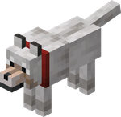
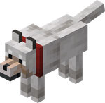
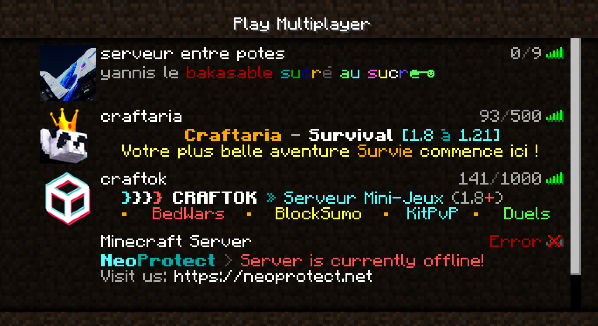
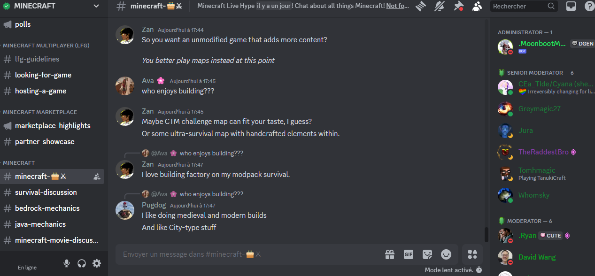
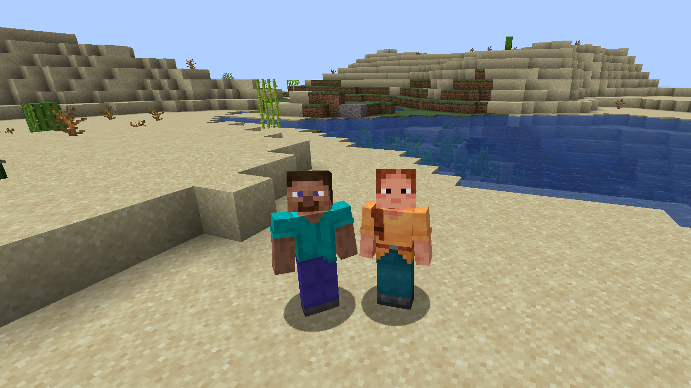

Raison 4 : L’Aspect Social 
Raison 4 : L’Aspect Social 
L'un des éléments les plus attrayants de Minecraft est son aspect social. Le jeu offre de nombreuses possibilités pour interagir avec d'autres joueurs, que ce soit en ligne ou en local.
Jouer avec des Amis
Minecraft permet aux joueurs de créer des serveurs privés où ils peuvent inviter des amis à rejoindre leurs aventures. Travailler ensemble sur des projets communs, comme la construction d'une ville ou d'une forteresse, renforce les liens d'amitié et rend l'expérience de jeu encore plus agréable.

Communautés en Ligne
De nombreux joueurs participent à des communautés en ligne dédiées à Minecraft. Ces communautés permettent de partager des créations, des astuces, et de s'entraider. Les forums, Discord et réseaux sociaux regorgent de discussions passionnantes et d'événements communautaires.

Compétitions et Événements
Minecraft organise régulièrement des compétitions et des événements, où les joueurs peuvent montrer leurs compétences et gagner des récompenses. Participer à ces événements crée un sentiment de camaraderie et offre l'occasion de se mesurer à d'autres créateurs.
Création de Souvenirs
Les moments passés à jouer à Minecraft avec des amis deviennent souvent des souvenirs précieux. Qu'il s'agisse de construire ensemble ou de survivre à des aventures épiques, ces expériences renforcent les relations et créent des histoires à partager.

Conclusion
En somme, l'aspect social de Minecraft est un facteur clé de son succès. Les joueurs ne se contentent pas de construire et de survivre, ils créent des liens, partagent des expériences et s'amusent ensemble, rendant chaque partie unique et mémorable.